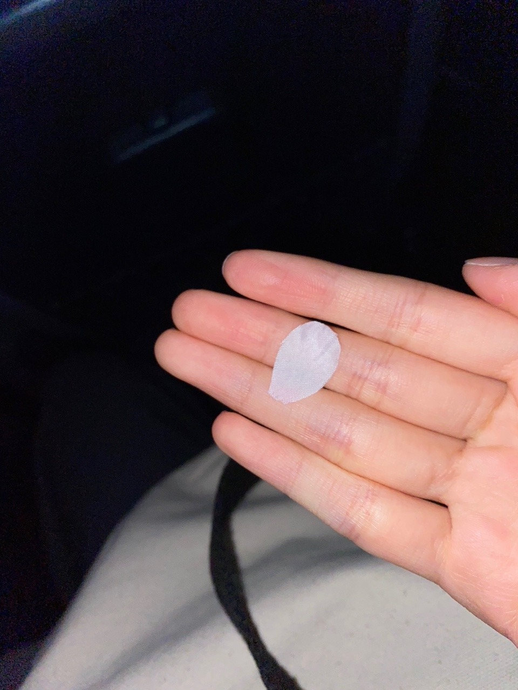

2020/1110Tueお疲れ様です！先輩方とのお話が主です。林瑠奈です。
本日もお疲れ様です。
乃木坂46、4期生の林瑠奈です。
神奈川県出身高校2年生17歳
華咲くセブンのティーンの林瑠奈です。
負けるなしょげるな林瑠奈、今日も1日頑張るな
(ピンポーン)
40周目となりました、ブログリレー。
最近ふと思ったことなんですが、(いや、この後の文脈的に"最近"はまだ使いたくない)
以前は、『〜○周目となりました、ブログリレー』の定型文の後、一つ波があってから本題へと入っていたんです。 近況とか近況とか...
でもここ何周か、というかしばらくの間、さらっと本題へ入っていたなと思いまして。
そういえばここは、最近の出来事を書く場所やったぞと思い出したのであります。
はい。
【ノギザカスキッツACT 2】
昨晩からスタート致しました。
シーズン2となります今期からは、3期生の方々と共に番組をやらさせて頂いています。
心強い皆さんと一緒に、より良いものを作っていけるよう誠心誠意頑張らさせて頂きます。

以前、ACT 2のビジュアル撮影があった際のことを少し。
先日ののぎおびでも話させていただいたのですが、3期生の先輩とのことです。
ブログで"お話ししてみたい先輩"として挙げさせて頂いて、そこから連絡を取らせて頂いていた、吉田綾乃クリスティーさん。
ブログを見てくださり、わたしの誕生日の際に連絡をくださった、中村麗乃さん。
推しメンとして挙げさせて頂いている、
伊藤理々杏さん。
3期生さんとコミュニケーションを取るチャンスだと思っていたこの日に、御三方に話しかけることに成功致しました！！
皆さんで『いっせーのーせ』をされているのを見て、いつ話しかけに行こうかと迷った挙句、あやてぃーさんに
「いま話しかけに行ってもいいですか？」
とメールをして承諾を得ましたので、さやかに付いて来てもらって、出陣しました。
その後、あやてぃーさん、れのさん、りりあさんとさやかとわたしの5人で『いっせーのーせ』をやらせていただいて、もうもの凄く嬉しかったです！
あやてぃーさんがりりあさんに耳打ちをして、わたしは『好きだよ！』と。りりあさんに言っていただきました。
嬉しい！愛しい！世界一！
色々お話しさせて頂けて、とても楽しかったです。
林の積極性ステータスが成長しているのではないかと自分ながらに思っています。
ノギザカスキッツACT 2、よろしくお願い致します！！
...........................................................................
そんなお優しいあやてぃーさんが、この間お仕事ですれ違ったとき、造花の桜の花びらを置いてくださいました。

無事、守り抜きました。
...........................................................................
『乃木坂46 4期生ライブ 2020』
12月6日(日)に、4期生ライブを開催させて頂けることが発表されました。
16人でライブをさせて頂けること、本当に有難いなと思っています。
皆さんに楽しんで頂けるように、
盛り上がり過ぎて次の日の皆さんは、疲労で遅刻をかますだろうというぐらいの熱量を届けますので、よろしくお願い致します！！
4期生の頼れる師範たちにお世話になりながら、頑張らさせて頂きます。
...........................................................................

『世界で1番 孤独なLover』での衣装です。
上記のように3期生さんとコミュニケーションを取ることに成功した林は、前日リハーサル、当日も先輩方に話しかけることに挑戦しました。
そうなんです、だから生写真にサインをして頂くことができたのです。
当日リハーサルの際にわたしが歩いていたら、後ろからりりあさんが寄ってきてくださいました。
お、おはようございます！しか言えなかったです。
皆さん本当にお優しくて、れのさんもあやてぃーさんも横を通ったときに声をかけてくださったりして、暖かさが五臓六腑に染み渡りました。
もう染みすぎてふやけそうな勢いでした。
うれしかったです☺︎

なおが撮ってくれた写真です。
鳥になろうとした様です。
...........................................................................
明日はミュウちゃんです。
ご指導ご鞭撻の程よろしくお願いします。
アディオス！！
先日ののぎおびにて、「夏野菜カレーが好きです。でも今年は食べれてないんですよ。」とわたしが言っていたようで、
それを聞いた母親が『絶対夏野菜カレー食べてるはず』と断言してきました。
忘れられていたのが悔しかったらしく、夏野菜カレーを作ってくれました。

P.S.黙りか、喋りか、無理か
声だけで癒されるし可愛いと散々言ってました。
りかお疲れ様、めっちゃ可愛かった☺︎
かしこ
2020/11/10 15:06
コメント(170)
可愛すぎる
もう、反則レベル
これから大変なこともあるかも？だけど
瑠奈ちゃんが向かう方向に追い風になるよう応援する。
決めた！いま、決めた！
もう、反則レベル
これから大変なこともあるかも？だけど
瑠奈ちゃんが向かう方向に追い風になるよう応援する。
決めた！いま、決めた！
お疲れ様です！外ハネ可愛いね！と言われて、外ハネ可愛いお写真をド頭にもってくる、林の瑠奈さん、大好きです！4期生ライブ楽しみにしております！
りかぴの芋ズームに続きましての、るなぴの夏野菜カレーズーム。接写ブームなのでしょうか？カメラのレンズ、そのまま夏野菜カレーに突っ込みましたでしょうか？カメラ、煮込みましたでしょうか？カメラは夏野菜でしょうか？
失礼しました！素敵な年末になりますように☺︎
りかぴの芋ズームに続きましての、るなぴの夏野菜カレーズーム。接写ブームなのでしょうか？カメラのレンズ、そのまま夏野菜カレーに突っ込みましたでしょうか？カメラ、煮込みましたでしょうか？カメラは夏野菜でしょうか？
失礼しました！素敵な年末になりますように☺︎
ブログ更新ありがとう！！
40回目の更新だね〜〜☺︎
ノギスキAct2始まったね！！
初回から3期生のスキットもあって面白かった笑
るなぴも3期生の先輩たちと
お話しできる絶好のチャンスだね◎
教科のファイルごとに直筆の生写真
入れてるなんて贅沢すぎる笑
これからも色んなメンバーとの
エピソードとか楽しみに待ってるね☺︎
夏野菜カレー食べてたのかな？笑
P.S.ライスも頼めて人の買い物まで
できるまで成長してるの驚いた
アディオス！！
40回目の更新だね〜〜☺︎
ノギスキAct2始まったね！！
初回から3期生のスキットもあって面白かった笑
るなぴも3期生の先輩たちと
お話しできる絶好のチャンスだね◎
教科のファイルごとに直筆の生写真
入れてるなんて贅沢すぎる笑
これからも色んなメンバーとの
エピソードとか楽しみに待ってるね☺︎
夏野菜カレー食べてたのかな？笑
P.S.ライスも頼めて人の買い物まで
できるまで成長してるの驚いた
アディオス！！
瑠奈ちゃん、こんばんは〜
もうみんなは新制服着たのかな？
しあわせの保護色の制服もベージュの雰囲気がとても可愛かったよね
今回はパステルカラーの水色も合わさって冬というより春を先取りしたような配色だな〜と感じました。
そこでお願いなんですが…新制服の写真を見せてほしいです！
あと衣装の細かい所で何か見つけたらそれも教えてください。
今日はps5が発売されましたね。
瑠奈ちゃんは据え置きのゲーム機(SwitchとかWii)は遊びますか？
綺麗なゲーム画面を見るとワクワクします！
遊びたい！ってなるけど手を出せないからもどかしい…
4期生ライブの練習頑張ってね！応援してます！
もうみんなは新制服着たのかな？
しあわせの保護色の制服もベージュの雰囲気がとても可愛かったよね
今回はパステルカラーの水色も合わさって冬というより春を先取りしたような配色だな〜と感じました。
そこでお願いなんですが…新制服の写真を見せてほしいです！
あと衣装の細かい所で何か見つけたらそれも教えてください。
今日はps5が発売されましたね。
瑠奈ちゃんは据え置きのゲーム機(SwitchとかWii)は遊びますか？
綺麗なゲーム画面を見るとワクワクします！
遊びたい！ってなるけど手を出せないからもどかしい…
4期生ライブの練習頑張ってね！応援してます！
【4枚目の写真で一言】
林：あやめちゃんにかけられてた
ヒジキになる催眠1週間ぶりに解けたー！！


林：あやめちゃんにかけられてた
ヒジキになる催眠1週間ぶりに解けたー！！
今日の日刊スポーツさんの記事読んだよ！
コラム連載決定おめでとう！！！
寺田さんの後を引き継ぐ形で始まるのがとても楽しみです。
新しい形で毎週の楽しみが増えたことがとても嬉しいです！
コラム連載決定おめでとう！！！
寺田さんの後を引き継ぐ形で始まるのがとても楽しみです。
新しい形で毎週の楽しみが増えたことがとても嬉しいです！
るなぴ、日刊スポーツのコラム連載「負けるな！しょげるな！乗り遅れるな！」がスタートするということで、おめでとうございます。(^^)
やったね。
はやし節、めっちゃ楽しみです。
アディオス ！！！
やったね。
はやし節、めっちゃ楽しみです。
アディオス ！！！
瑠奈ちゃん‼︎
遅くなりました(定期)
瑠奈ちゃんを好きになってから、色々共通点が見つかってきたんですが、
一番大きいのは推しが一致してるってことです。
未央奈さんをはじめ、理々杏さんまで一致するとは…
私と息が合いますね！((は))
そんな大好きな推しちゃんと推しちゃんが絡んでる姿を想像すると…
幸せでお腹いっぱいです･:*+.\(( °ω° ))/.:+
るなっさんすママのカレー、美味しそう…！！
私も食べたい！！(切実)
自分は中学生だからお金がなくて、四期生ライブ見れるか分かんないけど
一生懸命お家から応援します！！！
少しでも私みたいな人の応援がルナちゃんに届きますように…
んじゃ、また今度っ！
アディオス！！おでぃおす！！！！
P.S.次のシングル、選抜発表もうすぐですね……！
瑠奈ちゃんや4期生のみんなが選抜入りしますように……！！
遅くなりました(定期)
瑠奈ちゃんを好きになってから、色々共通点が見つかってきたんですが、
一番大きいのは推しが一致してるってことです。
未央奈さんをはじめ、理々杏さんまで一致するとは…
私と息が合いますね！((は))
そんな大好きな推しちゃんと推しちゃんが絡んでる姿を想像すると…
幸せでお腹いっぱいです･:*+.\(( °ω° ))/.:+
るなっさんすママのカレー、美味しそう…！！
私も食べたい！！(切実)
自分は中学生だからお金がなくて、四期生ライブ見れるか分かんないけど
一生懸命お家から応援します！！！
少しでも私みたいな人の応援がルナちゃんに届きますように…
んじゃ、また今度っ！
アディオス！！おでぃおす！！！！
P.S.次のシングル、選抜発表もうすぐですね……！
瑠奈ちゃんや4期生のみんなが選抜入りしますように……！！
40周目のブログ更新ありがとう！
今回もお疲れ様。いつもありがとう。
のぎおびで言ってた話とほぼ同じなんだけど、“瑠奈ちゃんの言葉”だから、自身の成長や先輩と話せたことによる嬉しさが如実に表れてて、とても良かったし嬉しかった。
先輩と話せて良かったね。
4期生ライブ2020、出演決定おめでとう！
めちゃくちゃ楽しみ！
疲労で次の日のバイトを蹴るぐらいの熱量で盛り上がるから、よろしく！！(それはそれでダメ)
今回も色んなお写真ありがとう！
嬉しがってる姿、めちゃくちゃ可愛いよ！
お互い体調管理に気を付けて過ごそう。
次回のブログも楽しみにしてるな！w
アディオス！！！！！！！！
かしこ
p.s.
最後に質問。
4期生ライブでやってみたい楽曲は何？
自分はいつか瑠璃であの教室が観たい。
今回もお疲れ様。いつもありがとう。
のぎおびで言ってた話とほぼ同じなんだけど、“瑠奈ちゃんの言葉”だから、自身の成長や先輩と話せたことによる嬉しさが如実に表れてて、とても良かったし嬉しかった。
先輩と話せて良かったね。
4期生ライブ2020、出演決定おめでとう！
めちゃくちゃ楽しみ！
疲労で次の日のバイトを蹴るぐらいの熱量で盛り上がるから、よろしく！！(それはそれでダメ)
今回も色んなお写真ありがとう！
嬉しがってる姿、めちゃくちゃ可愛いよ！
お互い体調管理に気を付けて過ごそう。
次回のブログも楽しみにしてるな！w
アディオス！！！！！！！！
かしこ
p.s.
最後に質問。
4期生ライブでやってみたい楽曲は何？
自分はいつか瑠璃であの教室が観たい。
ちょっと、ちょっと！
何！？
LINEで意味深な動画が送られてきたんだけど！！
26thシングルの選抜発表！？
乃木坂工事中内での発表？？
未来が作られるって？？？
うわぁー！どうなるんだろ？
ということは、大幅なメンバー変更が
あるってこと？
るなぴは、どの位置？
ひょっとして選抜？
楽しみだけど、何か怖いわ〜！
何！？
LINEで意味深な動画が送られてきたんだけど！！
26thシングルの選抜発表！？
乃木坂工事中内での発表？？
未来が作られるって？？？
うわぁー！どうなるんだろ？
ということは、大幅なメンバー変更が
あるってこと？
るなぴは、どの位置？
ひょっとして選抜？
楽しみだけど、何か怖いわ〜！
こんばんは。
吉田さん ほかの先輩との懸け橋になってくださって
優しいステキな先輩ですね。
かけはしだけに さやかさんと一緒に行ったのでしょうか？
いろんな方とすこしずつ仲良くなれてうらやましく
感じルナ！
鳥になりたかったのなら つぎは是非バードでテイクオフな
ピンポーン！の名付け親なあの先輩とのツーショット写真を首を長ーくして待ってルナ！
バードな先輩は二期生ですが 二期生と言えば、
蘭世さんのコラムの連載のあとを引き継がれるそうで
おめでとうございます。
真面目なるなさんですから 何度も書き直してお料理上手そうなお母様に相談して 苦労してがんばって書かれているのだろうと思います。
そちらもたのしみにしていルナ！
配信ライブの準備もたいへんでしょうが お身体に気をつけてください。
吉田さん ほかの先輩との懸け橋になってくださって
優しいステキな先輩ですね。
かけはしだけに さやかさんと一緒に行ったのでしょうか？
いろんな方とすこしずつ仲良くなれてうらやましく
感じルナ！
鳥になりたかったのなら つぎは是非バードでテイクオフな
ピンポーン！の名付け親なあの先輩とのツーショット写真を首を長ーくして待ってルナ！
バードな先輩は二期生ですが 二期生と言えば、
蘭世さんのコラムの連載のあとを引き継がれるそうで
おめでとうございます。
真面目なるなさんですから 何度も書き直してお料理上手そうなお母様に相談して 苦労してがんばって書かれているのだろうと思います。
そちらもたのしみにしていルナ！
配信ライブの準備もたいへんでしょうが お身体に気をつけてください。
林 こんばんはー
こんばんはー
 初めましてな気がする
初めましてな気がする
ブログが良すぎて
いつも心の中で話しかけてるので
初めてじゃない気がする
でも多分初めまして（自信がない）
 本当は
本当は
るなぴって呼びたい
めちゃめちゃかわいいから
でも
林って呼ばれるのが
るなぴ本人の希望なので
泣く泣く林と呼ぶ
 関西なのでノギザカスキッツが見れない
関西なのでノギザカスキッツが見れない
とても悔し過ぎて・・・
でも結局
ノギザカスキッツで
4期生と3期生で仲良しつながりがいっぱいできることが
乃木坂の未来につながる
だったら
遠い関西の空から
悔しさを我慢して
祈ることで心の平穏を保つことに決めました
 そこでこのブログ
そこでこのブログ
林は勇気を出して3人も突撃したぞ
勲章ものだ
本当にうれしい
 勇者林さん（尊敬してることがばれてしまった）が
勇者林さん（尊敬してることがばれてしまった）が
もじもじ葉月ちゃん
 にも突撃して仲良くなったらうれしいなぁ
にも突撃して仲良くなったらうれしいなぁ
って想像しています。
葉月ちゃんは
本当はお友達作りたいのに
自分からはもじもじして行けないタイプって言ってた
話しかけてもらうと実はうれしいんだって
 葉月ちゃんは4期生だと
葉月ちゃんは4期生だと
セーラームーンミュージカルで一緒になった
まゆたんと聖来と仲良しなので
紹介してもらうと良いかも
（みんな一緒に「いっせーのーせ」をしたらいいかも
「いっせーのーせ」ってなんだろ？）
ブログが良すぎて
いつも心の中で話しかけてるので
初めてじゃない気がする
でも多分初めまして（自信がない）
るなぴって呼びたい
めちゃめちゃかわいいから
でも
林
るなぴ本人の希望なので
泣く泣く林
とても悔し過ぎて・・・
でも結局
ノギザカスキッツで
4期生と3期生で仲良しつながりがいっぱいできることが
乃木坂の未来につながる
だったら
遠い関西の空から
悔しさを我慢して
祈ることで心の平穏を保つことに決めました
林
勲章ものだ
本当にうれしい
もじもじ葉月ちゃん
って想像しています。
葉月ちゃん
本当はお友達作りたいのに
自分からはもじもじして行けないタイプって言ってた
話しかけてもらうと実はうれしいんだって
セーラームーンミュージカルで一緒になった
まゆたんと聖来と仲良しなので
紹介してもらうと良いかも
（みんな一緒に「いっせーのーせ」をしたらいいかも
「いっせーのーせ」ってなんだろ？）
【5枚目の写真で一言】
顕微鏡で見たインドの国旗
のオレンジ色の部分

顕微鏡で見たインドの国旗
のオレンジ色の部分
おはようございます瑠奈様(_ _)
瑠奈様にご報告致します(_ _)
わたくし乃木坂のU^ｪ^Uは、昨日の夕食にカレーとライスに生野菜のサラダを添えて、スープの代わりにとインスタントのお味噌汁を。小鉢には揚げ出し豆腐をいただきました(_ _)
瑠奈様へのご報告は以上です(_ _)
最後まで目を通してくださいましてありがとうございました(_ _)
今日という日が瑠奈様にとって素敵で素晴らしいものとなりますよう、心より願い、そして祈っております(_ _)
瑠奈様にご報告致します(_ _)
わたくし乃木坂のU^ｪ^Uは、昨日の夕食にカレーとライスに生野菜のサラダを添えて、スープの代わりにとインスタントのお味噌汁を。小鉢には揚げ出し豆腐をいただきました(_ _)
瑠奈様へのご報告は以上です(_ _)
最後まで目を通してくださいましてありがとうございました(_ _)
今日という日が瑠奈様にとって素敵で素晴らしいものとなりますよう、心より願い、そして祈っております(_ _)
26th制服を着てる林の写真がみたいです☻
チャァオ〜〜〜!☆彡
いつも〜おいらのハートを射止める〜〜⤴️⤴️
るなちゃん、こんばんはです❕❤️❤️❤️❤️❤️笑顔
お元気ですかぁ〜〜❔❤️❤️❤️❤️❤️笑顔
おいらは、今日仕事でした❕笑顔
珍しく体調不良を隠しながら〜頑張っていました❕笑
今日は早く横になって休んで、明日の仕事の為に頑張ります❕笑顔
次回の乃木坂スキッツ楽しみに楽しみにしています❕❤️❤️❤️❤️❤️笑顔
それでは〜大、大、大好き〜るなちゃん頑張ってねぇ〜〜〜⤴️⤴️⤴️❤️❤️❤️❤️❤️笑顔
(＠＾▽゜＠）ゞ❤️❤️❤️
❇️❇️おすまし！⚜️❇️⭐彡
あやてぃーもモバメで同じエピソード教えて
くれてたよ～、可愛かったって(*^^*)
お母さんの夏野菜カレー美味しそうやね(^∇^)
くれてたよ～、可愛かったって(*^^*)
お母さんの夏野菜カレー美味しそうやね(^∇^)
こんばんは。
初めまして、今日はshowroomお疲れ様でした。
まさやと申します。掛林ちゅきちゅきとか言ってたよくわからない人です笑
最後名前読み上げありがとうございました。
変な事ばっかり書いてて、変な人たちだなって思ったでしょうw
嫌な思いしてましたらごめんなさい！
今日は2人の仲良さそうな姿見れて楽しかったです。
今後も仲良く楽しく過ごしてください！
では、楽しい時間をありがとうございました！
まさや( ˊ̱˂˃ˋ̱ )
初めまして、今日はshowroomお疲れ様でした。
まさやと申します。掛林ちゅきちゅきとか言ってたよくわからない人です笑
最後名前読み上げありがとうございました。
変な事ばっかり書いてて、変な人たちだなって思ったでしょうw
嫌な思いしてましたらごめんなさい！
今日は2人の仲良さそうな姿見れて楽しかったです。
今後も仲良く楽しく過ごしてください！
では、楽しい時間をありがとうございました！
まさや( ˊ̱˂˃ˋ̱ )
声が大好きなんです^ ^
笑顔〜
笑顔〜
コメントする

PROFILE
新4期生リレー
202104
| SUN | MON | TUE | WED | THU | FRI | SAT |
|---|---|---|---|---|---|---|
| 1 | 2 | 3 | ||||
| 4 | 5 | 6 | 7 | 8 | 9 | 10 |
| 11 | 12 | 13 | 14 | 15 | 16 | 17 |
| 18 | 19 | 20 | 21 | 22 | 23 | 24 |
| 25 | 26 | 27 | 28 | 29 | 30 | |

るなぴお疲れ様です！
乃木中の新4期紹介の時には店員と話せない？というエピソードがあったので、3期生とコミュニケーションを取れたという事実が凄いなぁと思いました！
やっぱメンバーと店員さんとではそりゃ違いますよネ。
借りてきた猫状態になるのかな？
これからの乃木坂46を担っていく…いやっ未来そのものである3期生と4期生、それに1期生と2期生と一緒に過ごす年月や体験の共有を経て仲間になっていくと思うから、これからもっともっと積極的になれるといいネ(^^)
いつか先輩メンバーと仲良しな写真が見られるのを楽しみにしてますヨ♪
ノギザカスキッツも観れてないので、DVD&Blu-rayの発売を楽しみに待っときます！
4期生ライブの開催も決定しましたネ！
16人でのライブとても嬉しいですネ♪
まいやんの卒業ライブからそれほど時間は経ってないけど、あのライブで先輩メンバーが後輩達に与えたものの大きさは計り知れないです。
それは決してパフォーマンス能力や精神論ではなく、積み重ねてきたものの大きさやライブに懸ける思いが、そのままの形でみんなの目に焼き付いたと思う。
そうやって、きっと魂は受け継がれていくんだと思います！
あの熱量を体感できる場所はそこにしかないけど、きっと画面の向こうからでも、ちゃんとみんなの熱い想いは届くと思いますから、体調に気を付けながらも素敵なステージにしてきて下さいネ(^^)
応援してます！
ずっと気になってた。るなぴって人見知りなの？
喋っている姿を見ているとそうは思えないので！
もしくは努力の賜物ですかネ(^^)
いつも纏まりのない読みにくいコメントで申し訳ないです…
いつも応援してます！